<title>Progress Deck 16 Oct</title>
<link rel="preconnect" href="https://fonts.googleapis.com"><link href="https://fonts.googleapis.com/css2?family=Source+Sans+3:wght@400;600;700&display=swap" rel="stylesheet">
<style>
:root{--bg:#f4f6f8;--card:#ffffff;--ink:#17222b;--muted:#5b6873;--acc:#0b5d7a;--say:#e8f2f6;--line:#dde3e8;color-scheme:light}
@media (prefers-color-scheme:dark){:root:not([data-theme="light"]){--bg:#0f1519;--card:#172027;--ink:#e3eaef;--muted:#9aa8b3;--acc:#6cc0de;--say:#1c2f38;--line:#2a363f;color-scheme:dark}}
:root[data-theme="dark"]{--bg:#0f1519;--card:#172027;--ink:#e3eaef;--muted:#9aa8b3;--acc:#6cc0de;--say:#1c2f38;--line:#2a363f;color-scheme:dark}
body{background:var(--bg);color:var(--ink);font-family:"Source Sans 3",system-ui,sans-serif;font-size:16px;line-height:1.5}
main{max-width:980px;margin:0 auto;padding-inline:16px;padding-block:24px 48px;display:grid;gap:28px}
header h1{margin:0;font-size:1.7rem;color:var(--acc);text-wrap:balance} header p{margin:.3rem 0 0;color:var(--muted)}
.card{background:var(--card);border:1px solid var(--line);border-radius:10px;padding:16px}
.num{font-size:.75rem;letter-spacing:.06em;text-transform:uppercase;color:var(--muted)}
h2{margin:.2rem 0 .8rem;font-size:1.2rem;text-wrap:balance}
img{width:100%;height:auto;border:1px solid var(--line);border-radius:6px;background:#fff}
.notes{max-width:70ch} .notes p,.notes ul{margin:.6rem 0}
.say{background:var(--say);border-left:3px solid var(--acc);padding:.5rem .8rem;border-radius:4px}
.k{font-weight:600}
</style>
<main><header><h1>Progress deck: tunable bank + off-mesh quadrature</h1>
<p>13 slides, each with how to read the plot and what to say. Accuracy numbers on plots 1–6 and 8 are provisional (older references); plot 7 uses the new order-verified references.</p></header>
<section class=card id="s1"><div class=num>Page 1 / 13</div><h2>Title</h2>
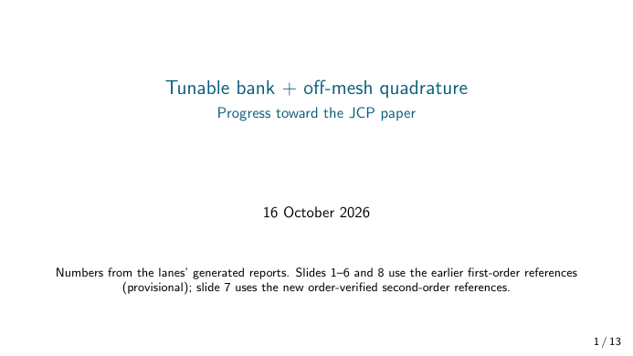<div class=notes><p>Most plots are scored against the <b>older, rough references</b> and are provisional. Plot 7 uses the <b>new order-verified references</b>. That answers “how do you know the true answer?”</p></div></section>
<section class=card id="s2"><div class=num>Page 2 / 13</div><h2>The idea</h2>
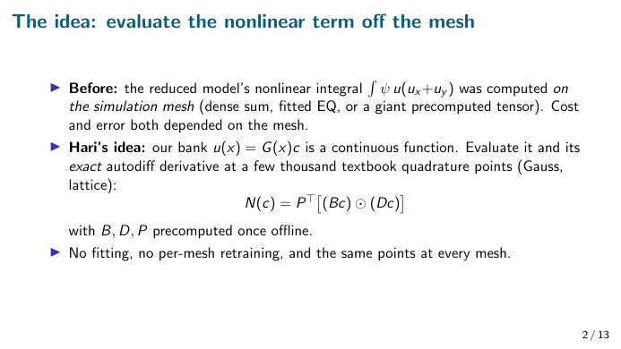<div class=notes><p>Our model writes the solution as a mix of learned shapes, u(x)=G(x)c, and solves only for the few weights c. The costly part is the nonlinear term u∇u.</p><ul><li><b>Before:</b> computed on the simulation mesh, so cost and error depended on the mesh.</li><li><b>Hari:</b> the shapes are smooth formulas, so evaluate them and their <b>exact derivative</b> at a few thousand textbook quadrature points.</li><li>Precompute B, D, P once; each step is a few small matrix products.</li></ul></div></section>
<section class=card id="s3"><div class=num>Page 3 / 13</div><h2>What we did</h2>
<div class=notes><p>The seven steps, in order. Walk through them quickly; each is a later slide.</p><p class=say>Say: “We took Hari's idea, tested every rule as a full solve, found why it works, fixed the next bottleneck, built trustworthy references, combined the winners, and are now working on 3D speed. Each step was pre-registered and independently checked.”</p></div></section>
<section class=card id="s4"><div class=num>Page 4 / 13</div><h2>1 · Accuracy no longer depends on the mesh (3D)</h2>
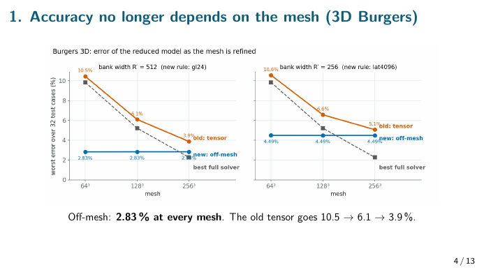<div class=notes><p><b>Read:</b> mesh size from coarse to fine across the bottom; worst error up the side, lower is better. <span class=k>Orange</span> = old method, <span class=k>blue</span> = Hari's, <span class=k>grey dashed</span> = full simulation. Left panel 512 shapes, right panel 256.</p><p><b>Shows:</b> orange falls 10.5 → 3.9 % because it inherits mesh error. Blue is <b>flat at 2.83 %</b> at every mesh, and beats the full simulation on coarse meshes.</p><p class=say>Say: “With Hari's points, accuracy doesn't care about the mesh.”</p></div></section>
<section class=card id="s5"><div class=num>Page 5 / 13</div><h2>2 · Neither does cost (2D)</h2>
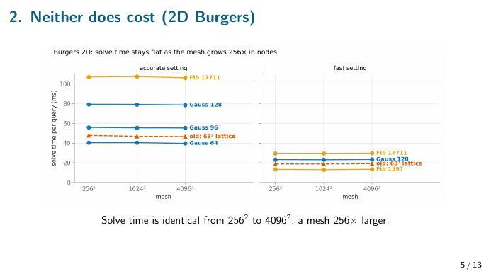<div class=notes><p><b>Read:</b> mesh size from 256² to 4096² (256× more points); milliseconds per solve. One line per quadrature rule; accurate setting on the left, fast on the right.</p><p><b>Shows:</b> every line is <b>horizontal</b>. More quadrature points cost more, but mesh size never does.</p><p class=say>Say: “Solve cost is independent of mesh resolution.”</p></div></section>
<section class=card id="s6"><div class=num>Page 6 / 13</div><h2>3 · Memory: wide banks become possible</h2>
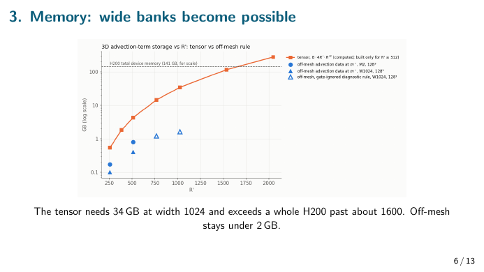<div class=notes><p><b>Read:</b> bank width (number of shapes) against memory in GB, on a log scale. <span class=k>Orange</span> = old exact tensor, <span class=k>blue</span> = Hari's method, dashed line = a whole 141 GB GPU.</p><p><b>Shows:</b> the old method grows with width squared: 4 GB at 512, 34 GB at 1024, and it no longer fits past about 1600. Hari's stays at 0.1–1.6 GB.</p><p class=say>Say: “The old method can't scale to big banks; Hari's makes wide banks possible.”</p></div></section>
<section class=card id="s7"><div class=num>Page 7 / 13</div><h2>4 · Which quadrature rules work</h2>
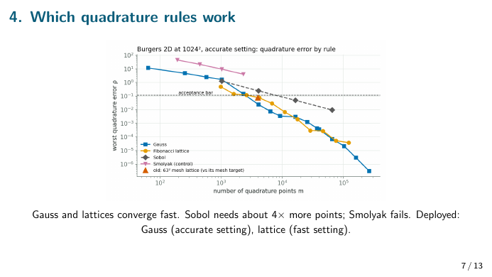<div class=notes><p><b>Read:</b> number of quadrature points against the error in the nonlinear term (log scale). The dashed line is the acceptance bar.</p><p><b>Shows:</b> Gauss (blue) and the Fibonacci lattice (yellow) drop steeply and pass the bar at about 2–4k points. Sobol (grey) needs about 4× more. Smolyak (pink) never makes it.</p><p class=say>Say: “Classical rules work, with no fitting. Gauss for accuracy, lattices for speed.”</p></div></section>
<section class=card id="s8"><div class=num>Page 8 / 13</div><h2>Every rule as a full Burgers solve: accuracy vs speed</h2>
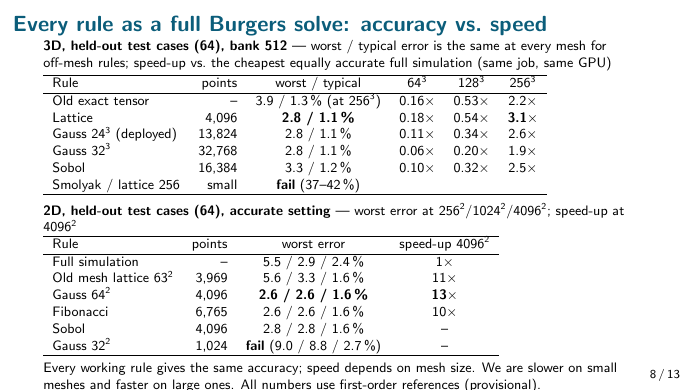<div class=notes><p><b>Read:</b> speed-up = time of the cheapest full simulation that is <i>as accurate</i>, divided by our time, on the same GPU in the same job. Above 1× we're faster.</p><ul><li><b>3D:</b> every working rule gives 2.8 % worst / 1.1 % typical at every mesh, better than the old tensor's 3.9 %. We're slower at 64³ and 128³, and 2–3× faster at 256³; the 4,096-point lattice is the fastest at 3.1×. Smolyak and the 256-point lattice fail.</li><li><b>2D:</b> Gauss 64² is more accurate than the full simulation at every mesh and 13× faster at 4096². Gauss 32² has too few points and fails.</li></ul><p class=say>Say: “Every working rule gives the same accuracy; which one doesn't matter much. Speed depends on mesh size: we lose on small meshes and win clearly on big ones.”</p></div></section>
<section class=card id="s9"><div class=num>Page 9 / 13</div><h2>5 · Why it works: the exact derivative</h2>
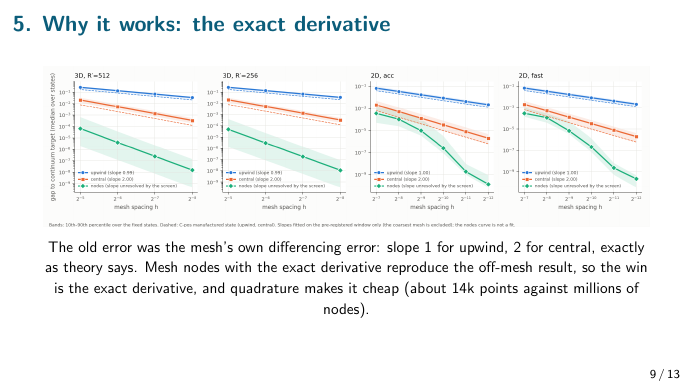<div class=notes><p><b>Read:</b> mesh spacing, getting finer to the right, against the gap between the mesh calculation and the true integral. <span class=k>Blue</span> = old first-order mesh differences, <span class=k>orange</span> = second-order differences, <span class=k>green</span> = mesh nodes with the exact derivative.</p><p><b>Shows:</b> blue falls with slope 1 and orange with slope 2, exactly as theory predicts. Green is thousands of times lower.</p><p class=say>Say: “The old error was the mesh's own derivative approximation. The exact derivative removes it, and Hari's points make it cheap.”</p></div></section>
<section class=card id="s10"><div class=num>Page 10 / 13</div><h2>6 · Next bottleneck: time stepping</h2>
<div class=notes><p><b>Read:</b> time per solve against typical error. <b>Bottom-left is best.</b> Each line is one time-stepping scheme; its points are different step sizes. The circle is what we used before (backward Euler).</p><p><b>Shows:</b> the second-order schemes (BDF2, CN-R) pass far below the circle at the same cost, with about 9× less error.</p><p class=say>Say: “Once the nonlinear term was solved, time stepping was the limit. Second-order schemes fix it.”</p></div></section>
<section class=card id="s11"><div class=num>Page 11 / 13</div><h2>7 · Where we are, against the new accurate references</h2>
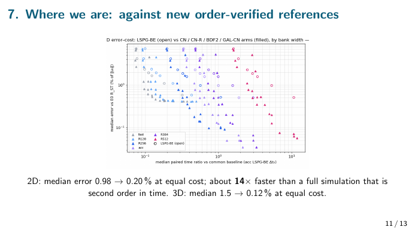<div class=notes><p><b>Read:</b> relative cost across the bottom (1 = our standard setting; left is cheaper) against typical error (lower is better). <b>Hollow circles</b> = old backward-Euler model, <b>filled triangles</b> = new second-order versions. Colour = bank width, from grey (narrow) to pink (512).</p><p><b>Shows:</b> every hollow circle has filled triangles below and to the left of it, so the new versions are both cheaper and more accurate. Wider banks cost more and reach lower error, which is the dial.</p><p class=say>Say: “2D is 5× more accurate at the same cost (0.98 → 0.20 %) and about 14× faster than a second-order full simulation. 3D is 13× more accurate at the same cost.”</p></div></section>
<section class=card id="s12"><div class=num>Page 12 / 13</div><h2>8 · Honest limit: 3D speed</h2>
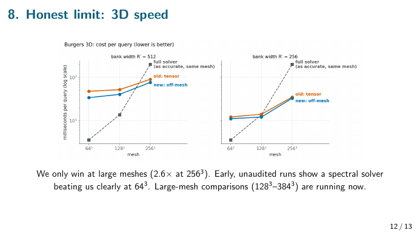<div class=notes><p><b>Read:</b> mesh size against milliseconds per solve (log scale). <span class=k>Grey dashed</span> = full simulation, <span class=k>orange</span> = old tensor, <span class=k>blue</span> = Hari's.</p><p><b>Shows:</b> the full simulation's cost rockets with mesh size while ours barely rises. The lines cross: the simulation is faster at 64³ and 128³, and we're 2.6× faster at 256³.</p><p class=say>Say: “We win on speed only at large meshes. Early runs show a spectral solver is very strong at small meshes. Large-mesh comparisons are running.”</p></div></section>
<section class=card id="s13"><div class=num>Page 13 / 13</div><h2>Next steps</h2>
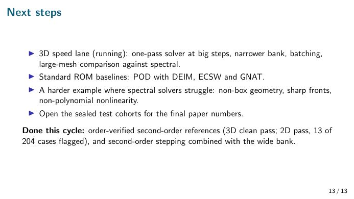<div class=notes><ul><li><b>Running:</b> 3D speed lane (one-pass solver, narrower bank, batching, comparison against spectral at large meshes).</li><li><b>Next:</b> standard reduced-model baselines (POD with DEIM, ECSW and GNAT); a harder example where spectral solvers struggle; opening the held-back test cases.</li><li><b>Done this cycle:</b> accurate reference solutions; second-order stepping combined with the wide bank.</li></ul></div></section></main>